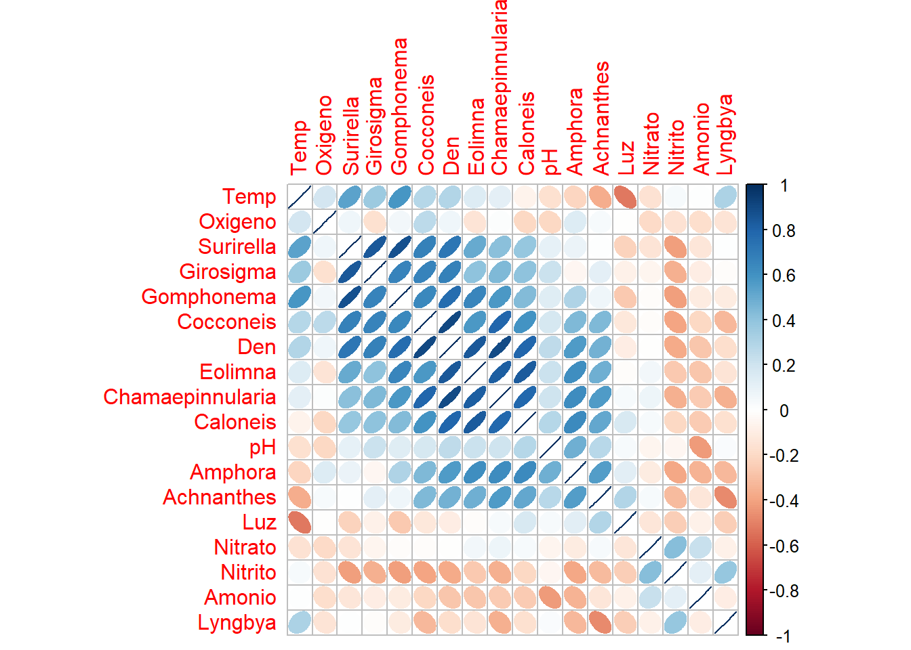
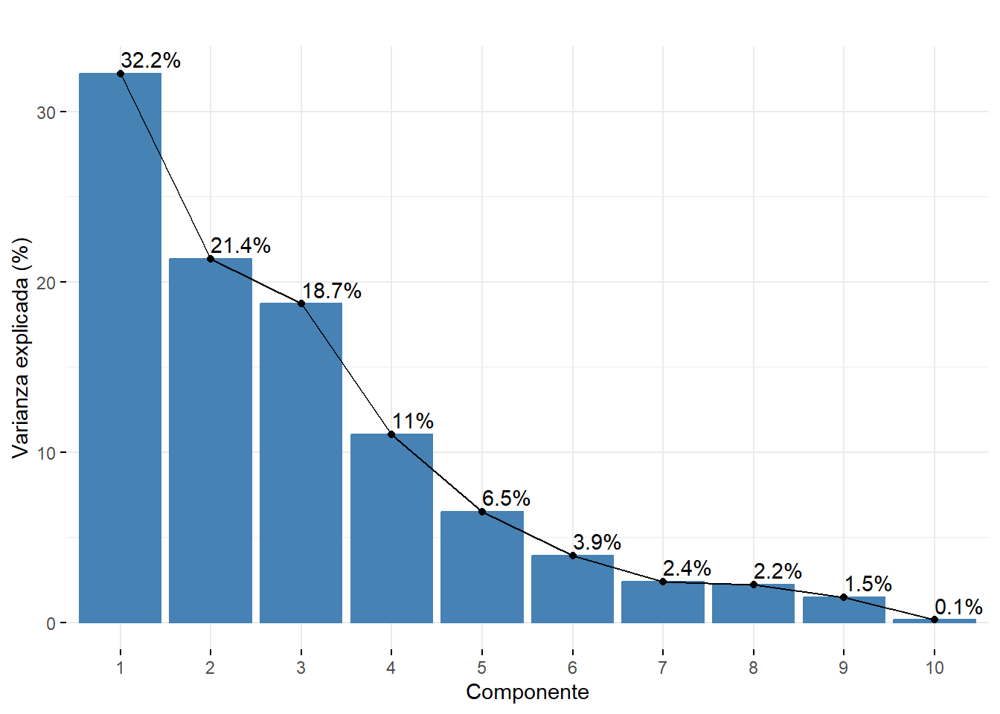
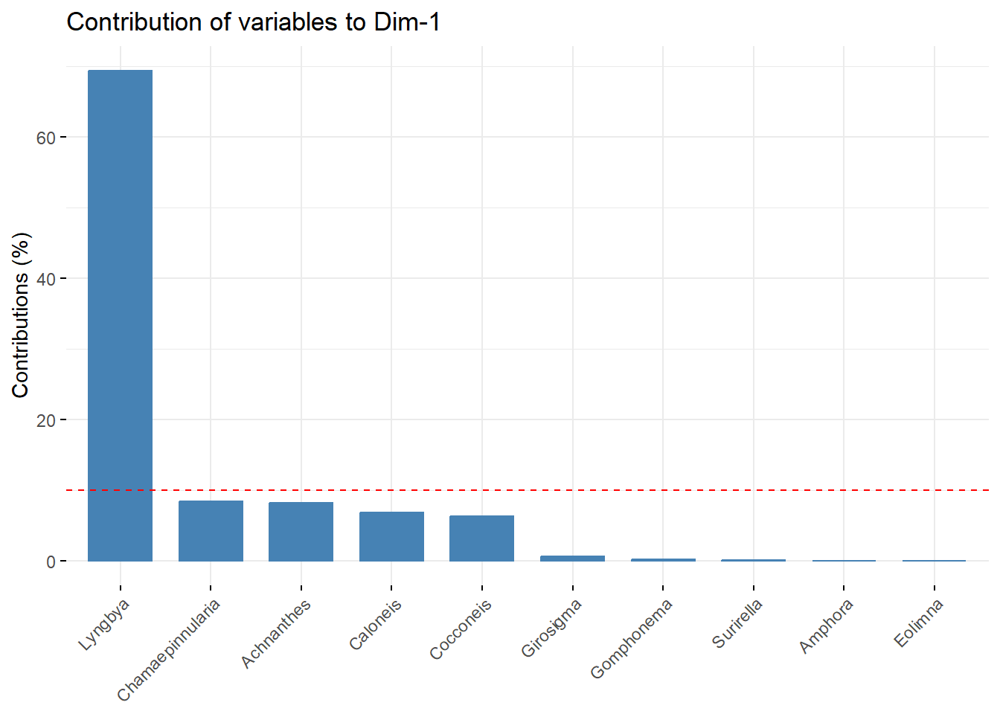
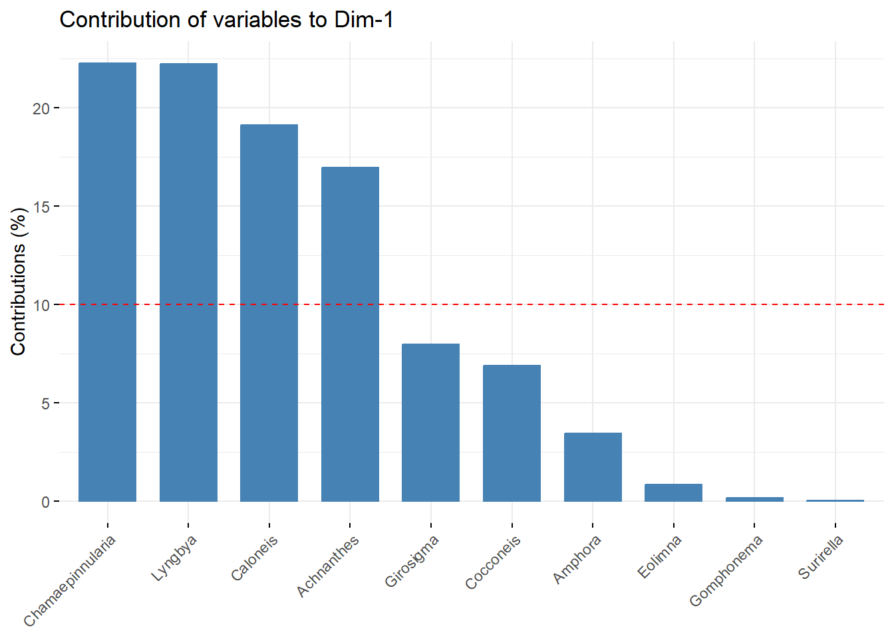
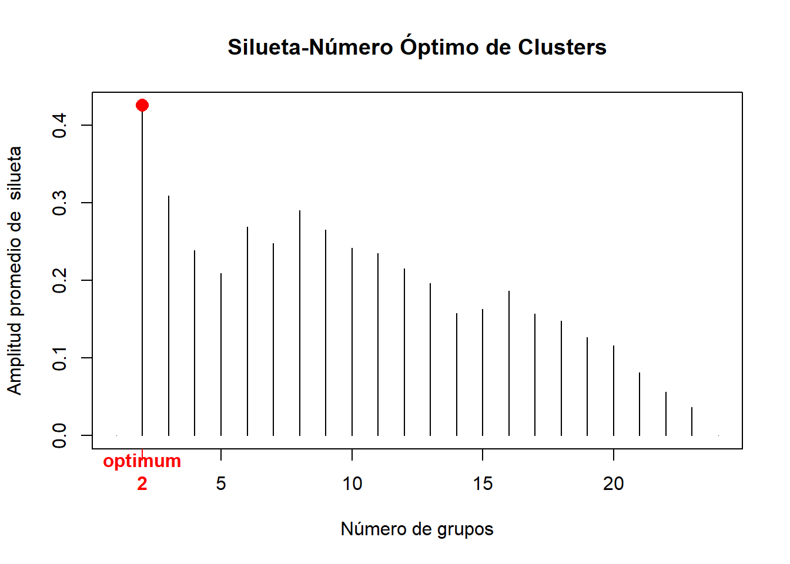

Se presenta una introduccion, objetivos e hipotesis para contextualizar la base de datos, seguido de la exploracion grafica, las tecnicas de ordenacion y clasificacion: PCA, NMDS, CLA. En el marco del estudio de caso (Densidad de Microalgas Periféricas en tres tributarios de la cuenca media del Rio Gaira, Santa Marta, Colombia.) desarrollado en la asignatura: Estadistica Multivariada 2024-1. Programa de Biología/Univercidad Del Magdalena.
Autor/a
Manuel L. Eestupiñan-Owen
Tomado de: Osorio Ávila (2015). Microscopía Electrónica de Barrido: A, B: Cocconeis placentula, C, D: Planothidium lanceolatum, E: Navicula sp., F: Amphora sp., G: Surirella Susanae, H: Melosira varians.
Introducción
PENDIENTE
Objetivos
Objetivo general
Analizar la diferencia en la densidad y la composición de las microalgas periféricas con diferentes niveles fisicoquímicos en tres tributarios del sector medio del rio Gaira SNSM.
Objetivos específicos
Determinar la relación entre los parámetros fisicoquímicos y la densidad de los taxones Microalgas Perifíticas en tres Tributarios de la cuenca media del Rio Gaira.
Determinar la relación de la densidad entre taxones de Microalgas Perifitícas en tres Tributarios de la cuenca media del Rio Gaira.
Determinar las variaciones de la densidad de microalgas y los factores fisicoquímicos de en cada uno de los tributarios del Rio Gaira, SNSM, Colombia.
Pregunta de análisis
¿Cuál es la variación en la densidad y la composición de las microalgas perifiticas con diferentes niveles fisicoquímicos en tres tributarios del sector medio del rio Gaira SNSM??
Hipótesis
H0: No existe diferencia en la densidad y la composición de microalgas perifíticas con diferentes niveles fisicoquímicos en los tres Tributarios de la cuenca media del Rio Gaira.
Ha: Existe diferencia en la densidad y la composición de microalgas perifíticas con diferentes niveles fisicoquímicos en los tres Tributarios de la cuenca media del Rio Gaira.
Flujograma
PENDIENTE
Librerias
Código
library(tidyverse)library(xtable) # Importar y exportarlibrary(openxlsx) # exportar "*.xlsx" library(readxl) # Importar y exportarlibrary(lattice) # No se requiere instalarlibrary(ggrepel) # insertar rótulos a los puntosrequire(SciViews) # Fig. dispersión con coef. de pearsonlibrary(ggplot2) # No se requiere instalarlibrary(plotrix) # Figuras de cajas con múltiples variableslibrary(corrplot) # Figuras de elipseslibrary(reshape) # Figuras de cajas con múltiples variableslibrary(readxl)library(dplyr)library(kableExtra)library(vegan)library(psych)library(reshape2)library(ggplot2)library(reshape2)library(ggrepel)library(vegan)library(factoextra)library(ggsci)library(ggforce)library(concaveman)library(corrplot)library(readxl)library(dplyr)library(FactoMineR)
En la Tabla 1 se presenta un resumen de la base de datos Microalgas.
Exploracion grafica
Figura de elipces
Código
M <-cor(microalgas[,2:19]) # Matriz de Correlación (M)
1. Ambientales VS biologicas
Código
corrplot(M, method ="ellipse", order ='AOE', type ='upper') # Figura de correlaciones con elipses

Figura 1: Relación entre las variables ambientales y los taxones de microalgas perifíticas en los tres tributarios de la cuenca media del Rio Gaira. Las elipse con azul intenso representan las relaciones lineales positivas y las de color rojo intenso, corresponden a las relaciones lineales negativas o inversas entre las parejas de variables.
En la Figura 1 se observan algunas relaciones lineales fuertes entre taxones como es el caso de Surirella con Girosigma y Gomphonema. Las relaciones màs fuertes se estan dando entre parejas de taxones. Sin embargo en general no se presentan muchas relaciones lineales fuertes tanto positivas como negativas.
Linealizacion de las variables
Transformacion de hellinger y log10
Código
#Variables biologicas trasformadas con hellingerbio =decostand(microalgas[,2:19],"hellinger") #Variables ambientales trasformadas con log10amb =log10(microalgas[,c(2:19)]+1)
Figura 2: Relación entre las variables ambientales y trasformados trasformadas.
En la Figura 2 se observa que las trasformaciones (Log10 y Hellinger) mejoraron algunas relaciones negativas entre la Luz y los taxones sin enbargo disminuyeron algunas relaciones positivas entre los parejas de taxones.
3. Biologicas VS Biologicas transformadas con Hellinger
Figura 3: Relación entre los taxones VS los taxones de microalgas perifíticas en los tres tributarios de la cuenca media del Rio Gaira.
En la Figura 3 se observan unicamente relaciones lineales positivas entre parejas de taxones y se descartan las relaciones más bajas. En general todas las relaciones son batante fuertes las más significativas estan dadas entre Calonesis con Girosigma y Chamaepinnularia con Eolimna. Se observaque en mayor o menor proporcion la presencia de los diferentes taxones se encuentra favoreciendo a los demás taxones.
4. Ambientales VS Biolagicas transformadas con Log10 y Hellinger
Figura 4: Relación entre las variables ambientales VS los taxones de microalgas perifíticas en los tres tributarios de la cuenca media del Rio Gaira.
En la Figura 4 se observan muy pocas relaciones significativas entre las variables fisicoquimicas y los taxones. Se encuentran algunas relaciones negativas entre la Luz y Surirella, Lyngbya, Eolimna y Gomphonema. En cuanto a las demás parejas de variables se aprecian algunas relaciones positivas con la temperatura y el pH, siendo la relacion entre la temperatura y Surirella la más fuerte.
Figura 5: Variación en la densidad de microalgas para los tres tributarios de la cuenca media del Rio Gaira.
En la Figura 5 se puede observar que las cajas se encuentran solapadas y las medianas de los tres tributarios son practicamente iguales, además existe unan alta dispersion de los datos, lo que indica que no existe una verdadera diferenciacion en la densidad de microalgas entre cada tributario evaluado.
Figura 6: Variación entre la densidad de los diferentes taxones de microalgas perifiticas para los tres tributarios de la cuenca media del Rio Gaira.
En la Figura 6 se observa que en general para la mayoria de los taxones no existe una diferencia en la densidad total de microalgas por cada tributario, las medias de los tres tributarios son similares y los intervalos de confianza se encuentran solapados. Para el taxon Achnanthes se puede observar que en tributario Jabali los datos de densidad se alejan de la tendencia anteriormente mencionada y en otros taxones como Girosigma y Suriella los valores de densidad presentan una dispercion mucho mayor en el tributario La Victoria.
Figura 7: Distribucion de frecuencia de los factores fisicoquimicos en cada uno de los tres tributarios evaluados.
En la Figura 7 se observa que para todas las variables ambientales los valores de la media son muy similares o incluso iguales en algunos casos para cada uno de los trubutarios, mientras que el rango de los datos varia mucho más entre tributarios para algunas variables como el Nitrito. Sin enbargo para todos los fisicoquimicos exepto el Oxigeno existe la precencia de outliers los cuales pueden causar sesgos en parametros como la media, distarcionar considerablemente el analisis grafico alterando las escalas lo que puede ocacionar que los datos parescan más dipersos de lo que en verdad son. Todo esto puede ocultar patrones importantes llevando a conclusiones sesgadas.
Análisis de Componentes Principales (PCA)
Código
# Variables ambientalesamb.pca =log10(microalgas[,c(2:8)]+1)# Variables biologicas transformados con Hellingerbio.pca =decostand(microalgas[,c(10:19)],"hellinger")
9. Contribución de cada dimensión o componente principal
Código
acp <-PCA(bio.pca, ncp =5, scale.unit =FALSE, graph =FALSE) # esto hace parte de la libreria factominer # observar la contribución de cada dimensión o componentefviz_screeplot(acp,addlabels=TRUE)+labs(title ="",y="Varianza explicada (%)",x="Componente")

Figura 8: Contribución de cada componente.
En la Figura 8 se obserba que el primer componente recoge una varianza del 46.6% mientras que el segundo componente recoge un 15.% de la varianza.
Código
# Contribución de variables en componente 1fviz_contrib(acp, choice ="var", axes =1)

Figura 9: Contribución de variables en el componente uno.
En la Figura 9 se obserba que Lyngbya es el taxon de mayor aporte en el primer componente.
Código
# Contribución de variables componente 2fviz_contrib(acp, choice ="var", axes =2)

Figura 10: Contribución de variables en el segundo componente.
En la Figura 10 se obserba que Amphora, Eolimna, Caloneis, Cocconeis y Gomphonema son los taxones de mayor aporte en el segundo componente.
Figura 11: Análisis de componentes principales (PCA). A la izquierda se presenta el biplot de las componentes principales por Tributario (elipses). Los vectores representan los taxones y los puntos las variables ambientales. A la derecha se observan el porcentaje de varianza explicada de las variables ambientales en la dimensión 1 y 2.
bio.nmds =decostand(microalgas[,10:19],"hellinger") # datos para el nmdsdatos.nmds <-metaMDS(bio.nmds,trace =FALSE, distance ="euclidean") # NMDS
Código
# 1) Coordenadas de los sitios y el factor (coord_sit)coord_sit <-as.data.frame(datos.nmds$points) # Coordenadas de los sitioscoord_sit$sitio <-rownames(coord_sit) # Crear una columna con nombres de los sitioscoord_sit$Grupo <- microalgas$Grupos # Adicionar columna de grupos por región# 2) Coordenadasde las especies (coord_tax) coord_tax <-as.data.frame(datos.nmds$species) # Dos primeros ejescoord_tax$especies <-rownames(coord_tax) # Insertar columna con las especies
# Datos para el NMDSbio.cla =decostand(microalgas[,10:19],"hellinger") # Variables biologicas trasformadas con hellinger# PASO 1. Distancia entre observacionesd.euclid <-dist(bio.cla) # Matriz de distancia
Código
# PASO 2. Elección del método de agrupación de mayor ajuste # Método 1. Vecino más cercano "Cl.single", función "hclust" y método "single"Cl.single <-hclust(d.euclid,method="single")# Método 2. Vecino más lejano "Cl.complete", función "complete" Cl.complete<-hclust(d.euclid,method="complete")# Método 3. UPGMA función "average" Unión Promedio no PonderadoCl.upgma<-hclust(d.euclid,method="average")# Método 4. UPGMC función "mcquitty" Unión Promedio PonderadoCl.upgmc<-hclust(d.euclid,method="mcquitty")# Método 5. WPGMA función "centroid"Cl.wpgma<-hclust(d.euclid,method="centroid")# Método 6. WPGMC función "median"Cl.wpgmc<-hclust(d.euclid,method="median")# Método 7. WARD, función "ward"Cl.ward<-hclust(d.euclid,method="ward.D")
Código
# 2.1 Correlación Cofenética# (1) Correlación cofenpetica para "single"cofenet1 <-cophenetic(Cl.single)simple =cor(d.euclid,cofenet1)# (2) Correlación cofenética para "complete"cofenet2<-cophenetic(Cl.complete)compl =cor(d.euclid,cofenet2)# (3) Correlación cofenética para "average"cofenet3<-cophenetic(Cl.upgma)upgma =cor(d.euclid,cofenet3)# (4) CCorrelación cofenética para "mcquitty"cofenet4<-cophenetic(Cl.upgmc)upgmc =cor(d.euclid,cofenet4)# (5) Correlación cofenética para "centroid"cofenet5<-cophenetic(Cl.wpgma)wpgma =cor(d.euclid,cofenet5)# (6) Correlación cofenética para "median"cofenet6<-cophenetic(Cl.wpgmc)wpgmc =cor(d.euclid,cofenet6)# (7) Correlación cofenética para "ward"cofenet7<-cophenetic(Cl.ward)ward =cor(d.euclid,cofenet7)
Tabulación de los valores cofenéticos
Código
# data frame para cofenéticoscofeneticos =data.frame(simple,compl,upgma,upgmc, wpgma,wpgmc,ward)# cofenéticos por cada métodos (Met)cofenet=data.frame(Met =1:7,Cofen=t(round(cofeneticos,3)))# tabla con orden descendente de cofenéticoscof_ordenado = cofenet[order(cofenet$Cofen, decreasing =TRUE), ]cof_ordenado %>%kbl(caption ="", booktabs = F, longtable = T) %>%kable_classic(full_width = F, html_font ="Cambria")
Tabla 2: Valores cofenéticos.
Met
Cofen
upgma
3
0.855
upgmc
4
0.819
wpgma
5
0.818
simple
1
0.746
compl
2
0.659
wpgmc
6
0.633
ward
7
0.624
En la Tabla 2 se presentan los valores confeneticos en orden descendiente.
Código
# convertir matricesde distancia a vectoresd.euclid <-as.vector(d.euclid)d.cofenet1 <-as.vector(cofenet1)d.cofenet2 <-as.vector(cofenet2)d.cofenet3 <-as.vector(cofenet3)d.cofenet4 <-as.vector(cofenet4)# crear un data frame con los vectores y agregar una columna de etiquetassimple1 <-data.frame(d.euclid, d.cofenet1, d.cofenet2, d.cofenet3, d.cofenet4)
12. Número de grupos formados - figura de silueta
Código
# Base de datos (amb)bio <-decostand(microalgas[,10:19],"hellinger")# Distancia utilizada (d.euclid)d.euclid <-dist(bio)# Método de agrupamiento seleccionado (cl.upgma)Cl.upgma<-hclust(d.euclid,method="average")
Código
library(cluster)# 1. Crear un vector vacío (bio.vacio) con asw valoresbio.vacio <-numeric(nrow(bio))# 2. Silueta "sil" for(k in2: (nrow(bio)-1)){ sil <-silhouette(cutree(Cl.upgma,k=k),d.euclid) bio.vacio[k]<-summary(sil)$avg.width} # 3. Mejor o mayor amplitud de silueta (2 particiones)k.mejor <-which.max(bio.vacio)
Código
# Grafica de siluetaplot(1:nrow(bio),bio.vacio,type="h",main="Silueta-Número Óptimo de Clusters", xlab="(Número de grupos)",ylab="Amplitud promedio de silueta")axis(1,k.mejor,paste("optimum",k.mejor,sep="\n"),col="red",font=2,col.axis="red")points(k.mejor,max(bio.vacio),pch=16,col="red",cex=1.5)
# Dendograma final fviz_dend(Cl.upgma, k =2, # k gruposcex =0.9, # tamaño del texto de las observacionesylab ="Distancia Euclídea", # Rotulo de la distanciamain ="Unión Promedio no Ponderada (UPGMA)", # Rotulo de títulolower_rect =0, # Inicio de los rectángulos en cerok_colors =c("#00AFBB","#54278f","#FC4E07"),color_labels_by_k =TRUE, # Colores para cada gruporect =TRUE) # Rectángulos de cada grupo

Figura 14: Dendograma jerárquico final con los dos grupos asignados.
# Matriz de distanciad.euclid <-dist((microalgas[,c(10:19)]))# Método 3. UPGMA función "average" Unión Promedio no PonderadoCl.upgma<-hclust(d.euclid,method="average")# Variable agrupadora con k=2 clústergrp <-cutree(Cl.upgma, k =2) # Grupos generados "grp" grl <-levels(factor(grp)) # Rotulos de los grupos formados# Incluir la variable agrupadora en la base de datosdatos.1=data.frame(grp,microalgas) # Nuevo dataframe con la variable agrupadora (gr)
Código
library(factoextra)fviz_cluster(list(data = bio, cluster = grp),palette =c("#2E9FDF", "#FC4E07","#54278f"), # Colores para cada grupoellipse.type ="confidence", # Elipsesrepel =TRUE, # Elimina solapamiento de observacionesshow.clust.cent =FALSE, # Muestra a los clúster centradosggtheme =theme_bw()) # Tipo de fondo tomado de ggplot2
Osorio Ávila, R. B., F. J. (2015). Balistidae. SUCESIÓN DE MICROALGAS PERIFÍTICAS EN TRIBUTARIOS DEL RÍO GAIRA SIERRA NEVADA DE SANTA MARTA-COLOMBIA. Acta Biológica Colombiana, 20(2). https://doi.org/10.15446/abc.v20n2.41932.
Ejecutar el código
---title: "Densidad de Microalgas Periféricas en tres tributarios de la cuenca media del Rio Gaira, Santa Marta, Colombia."subtitle: "Segundo avance del estudio de caso."description: "Se presenta una introduccion, objetivos e hipotesis para contextualizar la base de datos, seguido de la exploracion grafica, las tecnicas de ordenacion y clasificacion: PCA, NMDS, CLA. En el marco del estudio de caso (Densidad de Microalgas Periféricas en tres tributarios de la cuenca media del Rio Gaira, Santa Marta, Colombia.) desarrollado en la asignatura: Estadistica Multivariada 2024-1. Programa de Biología/Univercidad Del Magdalena."author: "Manuel L. Eestupiñan-Owen"title-block-banner: "#3690c0"lang: "es-ES"theme: Zephyrformat: html: toc: True toc-title: Tabla de contenido code-tools: true code-fold: truebibliography: references.bibcsl: apa (1).csleditor: visual---{fig-align="center"}# [Introducción]{style="color: #045a8d;"}PENDIENTE# [Objetivos]{style="color: #045a8d;"}### [Objetivo general]{style="color: #3690c0;"}Analizar la diferencia en la densidad y la composición de las microalgas periféricas con diferentes niveles fisicoquímicos en tres tributarios del sector medio del rio Gaira SNSM.### [Objetivos específicos]{style="color: #3690c0;"}1. Determinar la relación entre los parámetros fisicoquímicos y la densidad de los taxones Microalgas Perifíticas en tres Tributarios de la cuenca media del Rio Gaira.2. Determinar la relación de la densidad entre taxones de Microalgas Perifitícas en tres Tributarios de la cuenca media del Rio Gaira.3. Determinar las variaciones de la densidad de microalgas y los factores fisicoquímicos de en cada uno de los tributarios del Rio Gaira, SNSM, Colombia.# [Pregunta de análisis]{style="color: #045a8d;"}¿Cuál es la variación en la densidad y la composición de las microalgas perifiticas con diferentes niveles fisicoquímicos en tres tributarios del sector medio del rio Gaira SNSM?? # [Hipótesis]{style="color: #045a8d;"}**H0:** No existe diferencia en la densidad y la composición de microalgas perifíticas con diferentes niveles fisicoquímicos en los tres Tributarios de la cuenca media del Rio Gaira.**Ha:** Existe diferencia en la densidad y la composición de microalgas perifíticas con diferentes niveles fisicoquímicos en los tres Tributarios de la cuenca media del Rio Gaira.# [Flujograma]{style="color: #045a8d;"}PENDIENTE# [Librerias]{style="color: #1f78b4;"}```{r, warning=FALSE,message=FALSE}library(tidyverse)library(xtable) # Importar y exportarlibrary(openxlsx) # exportar "*.xlsx" library(readxl) # Importar y exportarlibrary(lattice) # No se requiere instalarlibrary(ggrepel) # insertar rótulos a los puntosrequire(SciViews) # Fig. dispersión con coef. de pearsonlibrary(ggplot2) # No se requiere instalarlibrary(plotrix) # Figuras de cajas con múltiples variableslibrary(corrplot) # Figuras de elipseslibrary(reshape) # Figuras de cajas con múltiples variableslibrary(readxl)library(dplyr)library(kableExtra)library(vegan)library(psych)library(reshape2)library(ggplot2)library(reshape2)library(ggrepel)library(vegan)library(factoextra)library(ggsci)library(ggforce)library(concaveman)library(corrplot)library(readxl)library(dplyr)library(FactoMineR)```# [Base de datos]{style="color: #1f78b4;"}```{r, warning=FALSE,message=FALSE}#| label: tbl-tbl1#| tbl-cap: Base de datos Microalgas.microalgas <-read_excel("microalgas.xlsx")microalgas$Grupos =as.factor (microalgas$Grupos)head(microalgas) %>%kbl(booktabs = F) %>%kable_classic(full_width = F, html_font ="Cambria")```En la @tbl-tbl1 se presenta un resumen de la base de datos Microalgas.# [Exploracion grafica]{style="color: #045a8d;"}### [Figura de elipces]{style="color: #3690c0;"}```{r}M <-cor(microalgas[,2:19]) # Matriz de Correlación (M) ```### [1. Ambientales VS biologicas]{style="color: #3690c0;"}```{r}#| label: fig-fig1#| fig-cap: Relación entre las variables ambientales y los taxones de microalgas perifíticas en los tres tributarios de la cuenca media del Rio Gaira. Las elipse con azul intenso representan las relaciones lineales positivas y las de color rojo intenso, corresponden a las relaciones lineales negativas o inversas entre las parejas de variables.corrplot(M, method ="ellipse", order ='AOE', type ='upper') # Figura de correlaciones con elipses```En la @fig-fig1 se observan algunas relaciones lineales fuertes entre taxones como es el caso de ***Surirella*** con ***Girosigma*** y ***Gomphonema***. Las relaciones màs fuertes se estan dando entre parejas de taxones. Sin embargo en general no se presentan muchas relaciones lineales fuertes tanto positivas como negativas.## [Linealizacion de las variables]{style="color: #3690c0;"}### [Transformacion de hellinger y log10]{style="color: #3690c0;"}```{r, warning=FALSE,message=FALSE}#Variables biologicas trasformadas con hellingerbio =decostand(microalgas[,2:19],"hellinger") #Variables ambientales trasformadas con log10amb =log10(microalgas[,c(2:19)]+1) ```### [2. Ambientales VS biologicas trasformadas]{style="color: #3690c0;"}```{r, warning=FALSE,message=FALSE}#| label: fig-fig2#| fig-cap: Relación entre las variables ambientales y trasformados trasformadas.M_loc_hel1 <-cor(amb, bio) # Matriz de Correlación (M)corrplot(M_loc_hel1, method ="ellipse", type="upper")```En la @fig-fig2 se observa que las trasformaciones (Log10 y Hellinger) mejoraron algunas relaciones negativas entre la Luz y los taxones sin enbargo disminuyeron algunas relaciones positivas entre los parejas de taxones.### [3. Biologicas VS Biologicas transformadas con Hellinger]{style="color: #3690c0;"}```{r, warning=FALSE,message=FALSE}#| label: fig-fig3#| fig-cap: Relación entre los taxones VS los taxones de microalgas perifíticas en los tres tributarios de la cuenca media del Rio Gaira.cor_test1 <-corr.test(bio[,9:18],method ="spearman",alpha = .05)$pcorrplot(corr =cor(bio[,9:18],method ="spearman"),is.corr =TRUE,method ="color",tl.col ="black",tl.cex =0.8,addCoef.col ='black',number.cex =0.6, addgrid.col ='black', p.mat = cor_test1,insig="blank", type ='upper')```En la @fig-fig3 se observan unicamente relaciones lineales positivas entre parejas de taxones y se descartan las relaciones más bajas. En general todas las relaciones son batante fuertes las más significativas estan dadas entre ***Calonesis*** con ***Girosigma*** y ***Chamaepinnularia*** con ***Eolimna.*** Se observaque en mayor o menor proporcion la presencia de los diferentes taxones se encuentra favoreciendo a los demás taxones.### [4. Ambientales VS Biolagicas transformadas con Log10 y Hellinger]{style="color: #3690c0;"}```{r, warning=FALSE,message=FALSE}#| label: fig-fig4#| fig-cap: Relación entre las variables ambientales VS los taxones de microalgas perifíticas en los tres tributarios de la cuenca media del Rio Gaira.cor_test<-corr.test(x = amb[,1:7], y=bio[,8:18],method ="spearman",alpha = .05)$p# correlograma de especies con variablescorrplot(corr =cor(x = amb[,1:7], y=bio[,8:18],method ="spearman"),type="upper",is.corr =TRUE,method ="color",tl.col ="black",tl.cex =0.8,addCoef.col ='black',number.cex =0.6, p.mat = cor_test, insig="blank", addgrid.col ='black')```En la @fig-fig4 se observan muy pocas relaciones significativas entre las variables fisicoquimicas y los taxones. Se encuentran algunas relaciones negativas entre la Luz y ***Surirella***, ***Lyngbya***, ***Eolimna*** y ***Gomphonema***. En cuanto a las demás parejas de variables se aprecian algunas relaciones positivas con la temperatura y el pH, siendo la relacion entre la temperatura y ***Surirella*** la más fuerte.## [Figuras de cajas]{style="color: #3690c0;"}### [6. Densidad total de taxones por tributario]{style="color: #3690c0;"}```{r, warning=FALSE,message=FALSE}#| label: fig-fig5#| fig-cap: Variación en la densidad de microalgas para los tres tributarios de la cuenca media del Rio Gaira.ggplot(microalgas, aes(x=Grupos, y=Den)) +geom_boxplot(aes(fill = Grupos)) +labs(x="Tributarios", y="Densidad total") +scale_fill_manual(values =c('#88419d','#99d594','#377eb8')) +theme_bw()```En la @fig-fig5 se puede observar que las cajas se encuentran solapadas y las medianas de los tres tributarios son practicamente iguales, además existe unan alta dispersion de los datos, lo que indica que no existe una verdadera diferenciacion en la densidad de microalgas entre cada tributario evaluado.### [7. Densidad de taxones por tributario]{style="color: #3690c0;"}```{r, warning=FALSE,message=FALSE}#| label: fig-fig6#| fig-cap: Variación entre la densidad de los diferentes taxones de microalgas perifiticas para los tres tributarios de la cuenca media del Rio Gaira.ggplot(melt(microalgas[,c(1,9:19)]), aes(x=variable, y=value)) +geom_boxplot(aes(fill=Grupos)) +scale_fill_manual(values =c('#88419d','#99d594','#74a9cf')) +labs(x="",y="Densidad total") +facet_wrap(~ variable,scales="free") +theme_bw()```En la @fig-fig6 se observa que en general para la mayoria de los taxones no existe una diferencia en la densidad total de microalgas por cada tributario, las medias de los tres tributarios son similares y los intervalos de confianza se encuentran solapados. Para el taxon ***Achnanthes*** se puede observar que en tributario Jabali los datos de densidad se alejan de la tendencia anteriormente mencionada y en otros taxones como ***Girosigma*** y ***Suriella*** los valores de densidad presentan una dispercion mucho mayor en el tributario La Victoria.### [8. Fisicoquimicos por tributario]{style="color: #3690c0;"}```{r, warning=FALSE,message=FALSE}#| label: fig-fig7#| fig-cap: Distribucion de frecuencia de los factores fisicoquimicos en cada uno de los tres tributarios evaluados.library(reshape2)ggplot(melt(microalgas[,c(1,2:7)]), aes(x=variable, y=value)) +geom_boxplot(aes(fill=Grupos)) +scale_fill_manual(values =c('#88419d','#99d594','#74a9cf')) +labs(x="",y="Fisicoquimicos") +facet_wrap(~ variable,scales="free") +theme_bw()```En la @fig-fig7 se observa que para todas las variables ambientales los valores de la media son muy similares o incluso iguales en algunos casos para cada uno de los trubutarios, mientras que el rango de los datos varia mucho más entre tributarios para algunas variables como el Nitrito. Sin enbargo para todos los fisicoquimicos exepto el Oxigeno existe la precencia de outliers los cuales pueden causar sesgos en parametros como la media, distarcionar considerablemente el analisis grafico alterando las escalas lo que puede ocacionar que los datos parescan más dipersos de lo que en verdad son. Todo esto puede ocultar patrones importantes llevando a conclusiones sesgadas.# [Análisis de Componentes Principales (PCA)]{style="color: #045a8d;"}```{r}# Variables ambientalesamb.pca =log10(microalgas[,c(2:8)]+1)# Variables biologicas transformados con Hellingerbio.pca =decostand(microalgas[,c(10:19)],"hellinger")```### [9. Contribución de cada dimensión o componente principal]{style="color: #3690c0;"}```{r, warning=FALSE,message=FALSE}#| label: fig-fig8#| fig-cap: Contribución de cada componente.acp <-PCA(bio.pca, ncp =5, scale.unit =FALSE, graph =FALSE) # esto hace parte de la libreria factominer # observar la contribución de cada dimensión o componentefviz_screeplot(acp,addlabels=TRUE)+labs(title ="",y="Varianza explicada (%)",x="Componente")```En la @fig-fig8 se obserba que el primer componente recoge una varianza del 46.6% mientras que el segundo componente recoge un 15.% de la varianza.```{r, warning=FALSE,message=FALSE}#| label: fig-fig9#| fig-cap: Contribución de variables en el componente uno.# Contribución de variables en componente 1fviz_contrib(acp, choice ="var", axes =1)```En la @fig-fig9 se obserba que Lyngbya es el taxon de mayor aporte en el primer componente.```{r, warning=FALSE,message=FALSE}#| label: fig-fig10#| fig-cap: Contribución de variables en el segundo componente.# Contribución de variables componente 2fviz_contrib(acp, choice ="var", axes =2)```En la @fig-fig10 se obserba que Amphora, Eolimna, Caloneis, Cocconeis y Gomphonema son los taxones de mayor aporte en el segundo componente.### [10. Figura del PCA]{style="color: #3690c0;"}```{r, warning=FALSE,message=FALSE}#| label: fig-fig11#| fig-cap: Análisis de componentes principales (PCA). A la izquierda se presenta el biplot de las componentes principales por Tributario (elipses). Los vectores representan los taxones y los puntos las variables ambientales. A la derecha se observan el porcentaje de varianza explicada de las variables ambientales en la dimensión 1 y 2.res.pca<-PCA(bio.pca, quali.sup =1, scale.unit =TRUE, graph =FALSE)p<-fviz_pca_biplot(res.pca, geom.ind ="point", col.var ="blue", habillage = microalgas$Grupos, repel =TRUE, addEllipses =TRUE, ellipse.level=0.95, legend.title="profundidad", palette =c("#00AFBB", "#E7B800", "#adb5bd","#a1d99b","#fc9272","#fa9fb5")) +theme_bw()acp2<-PCA(amb.pca, graph =FALSE, ncp =13 )coord<- acp2$var$coordcoord<- coord[,1:2]fviz_add(p, coord, color ="black", geom=c("text", "point"), repel =TRUE, labelsize =4, pointsize =1)```En la @fig-fig11 PENDIENTE# [Escalamiento multidimencional no metrico (NMDS)]{style="color: #045a8d;"}```{r,warning=FALSE,message=FALSE}bio.nmds =decostand(microalgas[,10:19],"hellinger") # datos para el nmdsdatos.nmds <-metaMDS(bio.nmds,trace =FALSE, distance ="euclidean") # NMDS``````{r,warning=FALSE,message=FALSE}# 1) Coordenadas de los sitios y el factor (coord_sit)coord_sit <-as.data.frame(datos.nmds$points) # Coordenadas de los sitioscoord_sit$sitio <-rownames(coord_sit) # Crear una columna con nombres de los sitioscoord_sit$Grupo <- microalgas$Grupos # Adicionar columna de grupos por región# 2) Coordenadasde las especies (coord_tax) coord_tax <-as.data.frame(datos.nmds$species) # Dos primeros ejescoord_tax$especies <-rownames(coord_tax) # Insertar columna con las especies```### [11. Figura del NMDS]{style="color: #3690c0;"}```{r, warning=FALSE,message=FALSE}#| label: fig-fig12#| fig-cap: Escalamiento multidimencional no métrico para los taxones de microalgas en los tres tributarios.p1<-ggplot(coord_sit, aes(x=MDS1, y=MDS2)) +# Sitios# geom_text_repel(data = coord_sit,aes(MDS1,MDS2,label = as.character(microalgas$Grupos)),# size=4)+ # Muestra el cuadro de la figurageom_point(data = coord_sit,aes(MDS1,MDS2,colour=Grupo),size=2)+scale_shape_manual(values =c(21:25))+# Especies geom_segment(data = coord_tax,aes(x =0, y =0, xend = MDS1, yend = MDS2), arrow =arrow(angle=0,length =unit(0,"cm"),type ="closed"),linetype=0, size=0,colour ="red")+#Factor# geom_polygon(data=coord_sit,aes(x=MDS1,y=MDS2,fill=Grupo,group=Grupo),alpha=0.30) +stat_ellipse(geom ="polygon", aes(fill = Grupo), alpha =0.15)+geom_hline(yintercept=0,linetype=2,size=0.6, color="gray7") +geom_vline(xintercept=0,linetype=2,size=0.6, color="gray7")+guides(shape=guide_legend(title=NULL,color="black"),fill=guide_legend(title=NULL))+theme_bw()+theme(panel.grid=element_blank(), legend.position ="top")+geom_text_repel(data = coord_tax,aes(MDS1,MDS2,label=especies),colour ="black")+labs(x="nMDS 1", y="nMDS2")+guides(fill =guide_legend(title ="Tributario", nrow =2))p1 +geom_text(data =data.frame(x =0.5, y =0.5, label ="Estrés = 0.09773626 "),mapping =aes(x = x, y = y, label = label),fontface =2, inherit.aes =FALSE)```En la @fig-fig12 PENDIENTE# [Análisis Clúster - CLA]{style="color: #045a8d;"}```{r, warning=FALSE,message=FALSE}# Datos para el NMDSbio.cla =decostand(microalgas[,10:19],"hellinger") # Variables biologicas trasformadas con hellinger# PASO 1. Distancia entre observacionesd.euclid <-dist(bio.cla) # Matriz de distancia``````{r, warning=FALSE,message=FALSE}# PASO 2. Elección del método de agrupación de mayor ajuste # Método 1. Vecino más cercano "Cl.single", función "hclust" y método "single"Cl.single <-hclust(d.euclid,method="single")# Método 2. Vecino más lejano "Cl.complete", función "complete" Cl.complete<-hclust(d.euclid,method="complete")# Método 3. UPGMA función "average" Unión Promedio no PonderadoCl.upgma<-hclust(d.euclid,method="average")# Método 4. UPGMC función "mcquitty" Unión Promedio PonderadoCl.upgmc<-hclust(d.euclid,method="mcquitty")# Método 5. WPGMA función "centroid"Cl.wpgma<-hclust(d.euclid,method="centroid")# Método 6. WPGMC función "median"Cl.wpgmc<-hclust(d.euclid,method="median")# Método 7. WARD, función "ward"Cl.ward<-hclust(d.euclid,method="ward.D")``````{r, warning=FALSE,message=FALSE}# 2.1 Correlación Cofenética# (1) Correlación cofenpetica para "single"cofenet1 <-cophenetic(Cl.single)simple =cor(d.euclid,cofenet1)# (2) Correlación cofenética para "complete"cofenet2<-cophenetic(Cl.complete)compl =cor(d.euclid,cofenet2)# (3) Correlación cofenética para "average"cofenet3<-cophenetic(Cl.upgma)upgma =cor(d.euclid,cofenet3)# (4) CCorrelación cofenética para "mcquitty"cofenet4<-cophenetic(Cl.upgmc)upgmc =cor(d.euclid,cofenet4)# (5) Correlación cofenética para "centroid"cofenet5<-cophenetic(Cl.wpgma)wpgma =cor(d.euclid,cofenet5)# (6) Correlación cofenética para "median"cofenet6<-cophenetic(Cl.wpgmc)wpgmc =cor(d.euclid,cofenet6)# (7) Correlación cofenética para "ward"cofenet7<-cophenetic(Cl.ward)ward =cor(d.euclid,cofenet7)```### [Tabulación de los valores cofenéticos]{style="color: #3690c0;"}```{r, warning=FALSE,message=FALSE}#| label: tbl-tbl2#| tbl-cap: Valores cofenéticos.# data frame para cofenéticoscofeneticos =data.frame(simple,compl,upgma,upgmc, wpgma,wpgmc,ward)# cofenéticos por cada métodos (Met)cofenet=data.frame(Met =1:7,Cofen=t(round(cofeneticos,3)))# tabla con orden descendente de cofenéticoscof_ordenado = cofenet[order(cofenet$Cofen, decreasing =TRUE), ]cof_ordenado %>%kbl(caption ="", booktabs = F, longtable = T) %>%kable_classic(full_width = F, html_font ="Cambria")```En la @tbl-tbl2 se presentan los valores confeneticos en orden descendiente.```{r, warning=FALSE,message=FALSE}# convertir matricesde distancia a vectoresd.euclid <-as.vector(d.euclid)d.cofenet1 <-as.vector(cofenet1)d.cofenet2 <-as.vector(cofenet2)d.cofenet3 <-as.vector(cofenet3)d.cofenet4 <-as.vector(cofenet4)# crear un data frame con los vectores y agregar una columna de etiquetassimple1 <-data.frame(d.euclid, d.cofenet1, d.cofenet2, d.cofenet3, d.cofenet4)```### [12. Número de grupos formados - figura de silueta]{style="color: #3690c0;"}```{r, warning=FALSE,message=FALSE}# Base de datos (amb)bio <-decostand(microalgas[,10:19],"hellinger")# Distancia utilizada (d.euclid)d.euclid <-dist(bio)# Método de agrupamiento seleccionado (cl.upgma)Cl.upgma<-hclust(d.euclid,method="average")``````{r, warning=FALSE,message=FALSE}library(cluster)# 1. Crear un vector vacío (bio.vacio) con asw valoresbio.vacio <-numeric(nrow(bio))# 2. Silueta "sil" for(k in2: (nrow(bio)-1)){ sil <-silhouette(cutree(Cl.upgma,k=k),d.euclid) bio.vacio[k]<-summary(sil)$avg.width} # 3. Mejor o mayor amplitud de silueta (2 particiones)k.mejor <-which.max(bio.vacio)``````{r, warning=FALSE,message=FALSE}#| label: fig-fig13#| fig-cap: Figura de silueta.# Grafica de siluetaplot(1:nrow(bio),bio.vacio,type="h",main="Silueta-Número Óptimo de Clusters", xlab="(Número de grupos)",ylab="Amplitud promedio de silueta")axis(1,k.mejor,paste("optimum",k.mejor,sep="\n"),col="red",font=2,col.axis="red")points(k.mejor,max(bio.vacio),pch=16,col="red",cex=1.5)```En la @fig-fig13 PENDIENTE### [13. Figura del dendograma jerárquico]{style="color: #3690c0;"}```{r, warning=FALSE,message=FALSE}#| label: fig-fig14#| fig-cap: Dendograma jerárquico final con los dos grupos asignados.# Dendograma final fviz_dend(Cl.upgma, k =2, # k gruposcex =0.9, # tamaño del texto de las observacionesylab ="Distancia Euclídea", # Rotulo de la distanciamain ="Unión Promedio no Ponderada (UPGMA)", # Rotulo de títulolower_rect =0, # Inicio de los rectángulos en cerok_colors =c("#00AFBB","#54278f","#FC4E07"),color_labels_by_k =TRUE, # Colores para cada gruporect =TRUE) # Rectángulos de cada grupo```En la @fig-fig14 PENDIENTE### [14. Figura del dendograma no jerárquico]{style="color: #3690c0;"}```{r, warning=FALSE,message=FALSE}# Matriz de distanciad.euclid <-dist((microalgas[,c(10:19)]))# Método 3. UPGMA función "average" Unión Promedio no PonderadoCl.upgma<-hclust(d.euclid,method="average")# Variable agrupadora con k=2 clústergrp <-cutree(Cl.upgma, k =2) # Grupos generados "grp" grl <-levels(factor(grp)) # Rotulos de los grupos formados# Incluir la variable agrupadora en la base de datosdatos.1=data.frame(grp,microalgas) # Nuevo dataframe con la variable agrupadora (gr)``````{r, warning=FALSE,message=FALSE}#| label: fig-fig15#| fig-cap: Dendograma no jerárquico final.library(factoextra)fviz_cluster(list(data = bio, cluster = grp),palette =c("#2E9FDF", "#FC4E07","#54278f"), # Colores para cada grupoellipse.type ="confidence", # Elipsesrepel =TRUE, # Elimina solapamiento de observacionesshow.clust.cent =FALSE, # Muestra a los clúster centradosggtheme =theme_bw()) # Tipo de fondo tomado de ggplot2```En la @fig-fig15 PENDIENTE```{=html}<style> body { text-align: justify} </style>```